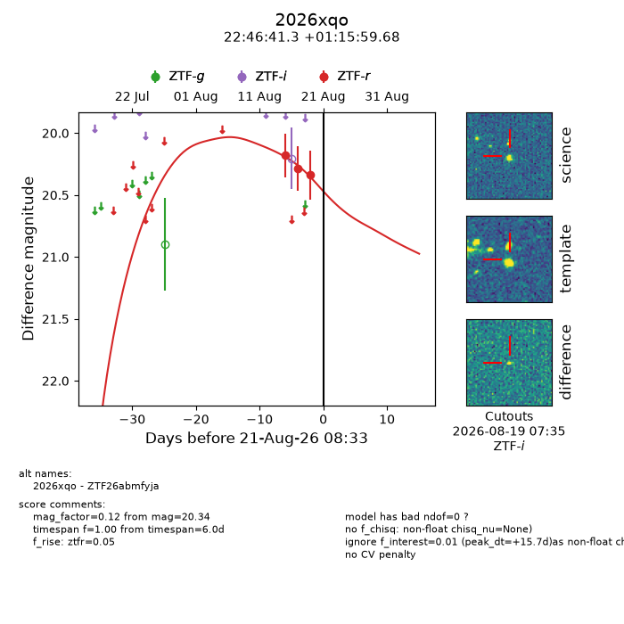
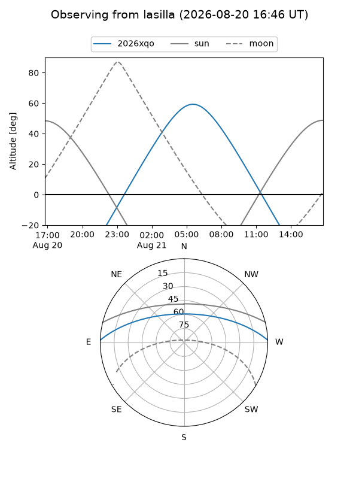
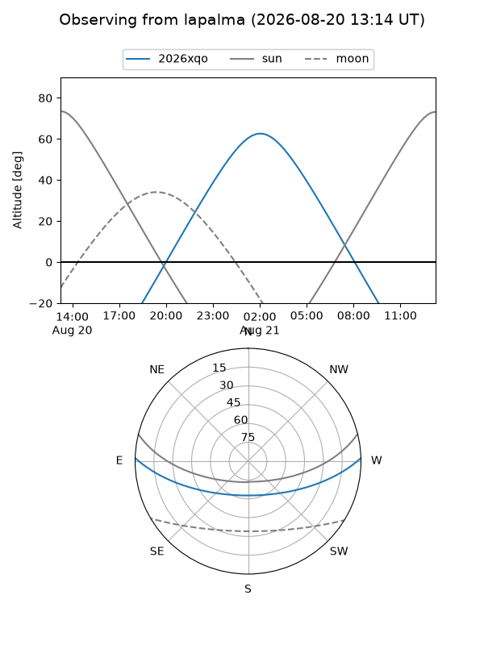
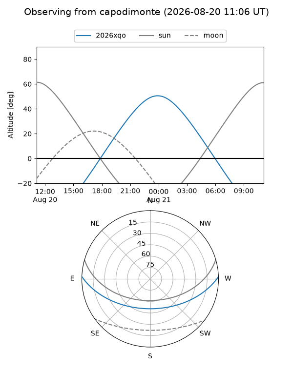
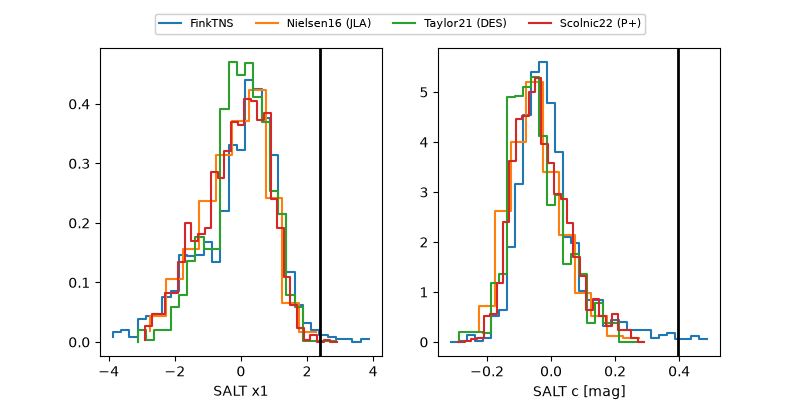

2026xqo
Target 2026xqo at 2026-08-21 08:37
Aliases and brokers:
FINK-ZTF: ztf.fink-portal.org/ZTF26abmfyja
Lasair-ZTF: lasair-ztf.lsst.ac.uk/objects/ZTF26abmfyja
ALeRCE-ZTF: alerce.online/object/ZTF26abmfyja
YSE-PZ: ziggy.ucolick.org/yse/transient_detail/2026xqo
TNS name: wis-tns.org/object/2026xqo
Direct TNS query: direct search
alt names
ZTF26abmfyja (ztf,fink_ztf)
2026xqo (tns,yse)
Coordinates:
equatorial (ra, dec) = 341.6719,+1.26658
equatorial (HMS+DMS) = 22:46:41.27,+01:15:59.68
galactic (l, b) = (71.2860,-48.68568)
Flags:
TNS type: nan
peak dt: +15.7
Photometry:
last ztfr=20.34
3 ztfr detections
Lightcurve

Visibility



Additional plots
